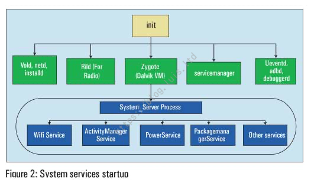

Android-Binder
Android-Binder
1. Linux跨进程通信
1.1 内核态与用户态
为了保障操作系统最基本的运行不受其他应用的影响，Linux 将内存分为内核空间和用户空间：
- 内核空间可以调用所有系统资源、执行任何指令，执行内核代码时，CPU 特权等级处于最高的 0，此时 CPU 处于内核态。
- 用户空间只支持简单运算，不能直接调用系统资源，执行用户代码时，CPU 特权等级处于最低的 3，此时 CPU 处于用户态。
用户空间想要调用部分系统资源则必须通过 SysCall 向内核空间发送指令由内核空间完成。SysCall 可以理解为，内核空间向外暴露的接口，SysCall 预先定义了一套允许用户空间发送的指令，并根据这些指令执行具体的系统命令。
用户空间可以借助 SysCall 向内核空间发送命令，如果多个用户空间之间需要通信，则需要借助内核空间完成交互。传统的 Linux 通信机制，例如 Socket 和管道，都是内核原生支持的，而 Binder 并不是 Linux 内核的一部分，而是通过 Linux 的动态可加载内核模块（Loadable Kernel Module, LKM）链接到 Linux 的内核中。LKM 允许独立编译但不允许独立运行，其运行时会被链接到内核作为内核的一部分运行于内核空间，因此用户空间不同进程之间就可以通过 Binder 通信。
（@注）在与 ServiceManager 和 Binder 通信的过程中，Client 和 Service 会发送多条命令，其中 Client 发起的请求命令称为 BC（Binder Client）命令；Service 响应的命令称为 BR（Binder Reply）命令。
1.2 Linux中的驱动
Linux 把硬件的读写抽象为文件 IO，而驱动就是对这个抽象的封装和实现。Linux 中有三种类型的驱动设备：字符设备、块设备、网络设备。
- 字符设备是指能像字节流文件一样被访问的设备，对字符设备 IO 时，硬件也同时进行 IO。例如显示屏、键盘、串口、LCD、LED 等。
- 字符设备中有一个比较特殊的 misc 杂项设备，设备号为 10，可以自动生成设备节点。Binder 就属于 misc 杂项设备。
- 块设备是指通过传输数据块（一般为 512b 或 1k）来访问的设备，例如硬盘、SD 卡、U 盘、光盘等。
- 网络设备是指能和其他主机交换数据的设备，例如网卡、蓝牙等。
1.3 Binder驱动
Binder 驱动并没有真正建立硬件 IO，而是借助驱动的方式，通过内存映射 mmap() 实现进程间通信。
跨进程无法直接通信的原因是，不同进程之间的内存不可见，因此两个进程无法直接操作另一个进程的内存。通常 Client 进程向 Service 进程请求通信时，需要先将 Client 的请求数据拷贝到内核区，然后再从内核区拷贝到 Service，造成两次数据拷贝，效率较低，因此 Binder 采用了内存映射 MemoryMap 的方式，仅用一次拷贝实现进程间通信：
- 使用 Binder 进行进程间通信时，Binder 驱动在内核创建一个数据接收缓冲区，然后在内核开辟一块内核缓冲区，并建立两个缓冲区之间的映射关系、以及 Service 用户空间中一块内存地址与数据接收缓冲区的映射关系；相当于此时 Service 的一块用户内存直接映射到了内核中的数据接收缓冲区。
- 将 Client 的数据拷贝到内核中的内核缓冲区，由于内核缓冲区与数据接收缓冲区存在映射关系，而数据接收缓冲区又与 Service 的一块用户内存存在映射关系，所以 Service 就能通过映射，直接操作内核缓冲区中来自 Client 拷贝的数据。
- 当 Service 处理完毕，对 Client 响应时，就会重复上述过程，只不过这时反过来，请求时的 Client 变为了响应时的 Service，请求时的 Service 变为了响应时的 Client。
2. ServiceManager
Android 基于 Linux 的系统，因此 Android 的系统运行也需要遵循 Linux 运行的基本原则。Linux 系统在启动时，第一启动的进程就是 init.c：

- 启动
init进程，进入 Linux 系统的第一步。 - 启动各类基础服务，包括 Zygote 和 ServiceManager 等。
- Zygote 启动 SystemService，SystemService 又会分裂出不同的系统服务，包括 ActviityManageService、PackageManageService 等
2.1 ServiceManager启动
ServiceManager 启动后，在 main 函数中对 Binder 和 Binder 驱动做了初始化：
- 调用
binder_open()打开 Binder 驱动；- 这一步还会在 Binder 内创建一个全局链表
binder_procs，并且将 ServiceManager 自己存入到第一个binder_proc节点，也即序号为 0。 - 由于 ServiceManager 也是一个独立进程，所以其他 Service 和 ServiceManager 通信本身又涉及到进程间通信；
- 因此 ServiceManager 存放在
binder_procs的 0 号节点，Binder 自动为其创建一个 Binder 实体，这样任何 Service 都可以通过 0 号引用从 Binder 中获取到 ServiceManager。
- 这一步还会在 Binder 内创建一个全局链表
- 调用
binder_become_context_manager()设为 Binder 进程的守护进程； - 调用
binder_loop开启 Binder 循环，Binder 循环会不断执行binder_parse()轮询 BR_XXX 命令。
2.2 ServiceManager注册和查找服务
ServiceManager 有两大主要功能：注册服务和查找服务。
（1）Service 启动后通过 ServiceManager 注册服务 do_add_service()：
ServiceManager 向 Binder 发送 BC_TRANSACTION 命令，携带 ADD_SERVICE_TRANSACTION 命令，同时注册服务的线程进入阻塞等待状态。
Binder 驱动收到命令后，向 ServiceManager 的 todo 队列中添加一条事务，事务的内容就是创建服务端进程 binder_node，并插入到 binder_procs 链表中。
Binder 处理完后，向 ServiceManager 发送 BR_TRANSACTION 命令，ServiceManager 收到后向已注册服务列表 svclist 中写入对应的信息 ServiceInfo，并发送 BR_REPLY 命令唤醒阻塞等待的线程。
每个 Service 启动时会创建一个 Binder 线程池，并向其中注册一个线程。Binder 线程池默认上线为 16 个，当 Client 调用 BinderService 处理事务时，都是通过添加到 Service 的线程池处理的：
（2）其他进程通过 ServiceManager 查找服务 do_find_service()：
- ServiceManager 在 Java 层有一个 HashMap 的缓存，缓存了所有被获取过的 Service，如果命中了缓存就会直接返回。
- 否则 ServiceManager 向 Binder 发送 BC_TRANSACTION 命令，携带 CHECK_SERVICE_TRANSACTION 命令，同时获取服务的线程进入阻塞等待状态。
- Binder 驱动收到命令后，向 ServiceManager 发送 BC_TRANSACTION 命令，优先从已注册服务列表 svclist 中查找；
- 如果 serviceInfo 中存在则直接响应 BR_REPLY 并唤醒阻塞等待的线程。
- 如果不存在，则向 binder_procs 链表中插入一条事务进行通信，事务执行后再返回响应。